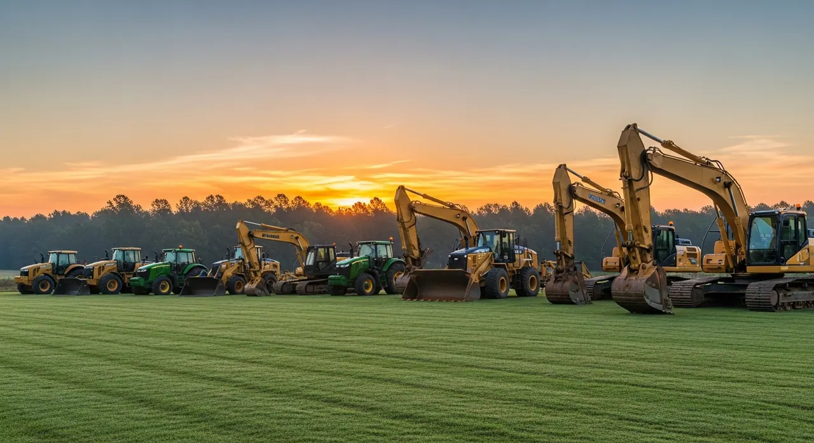
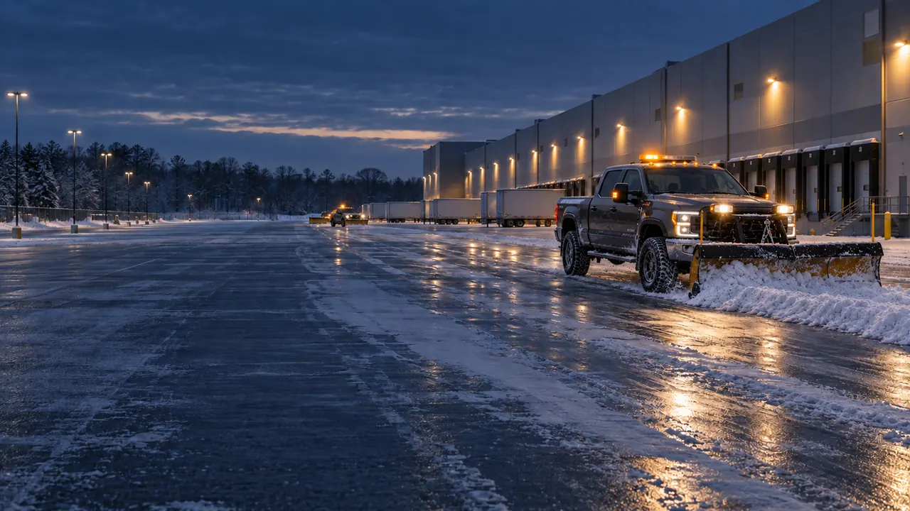
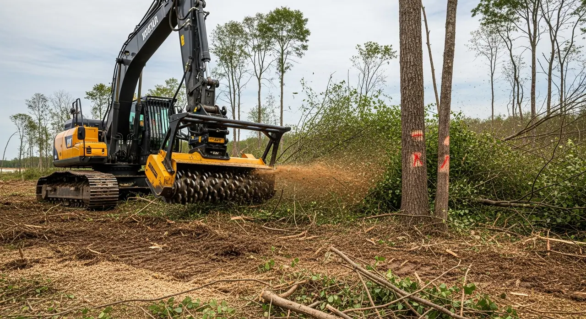
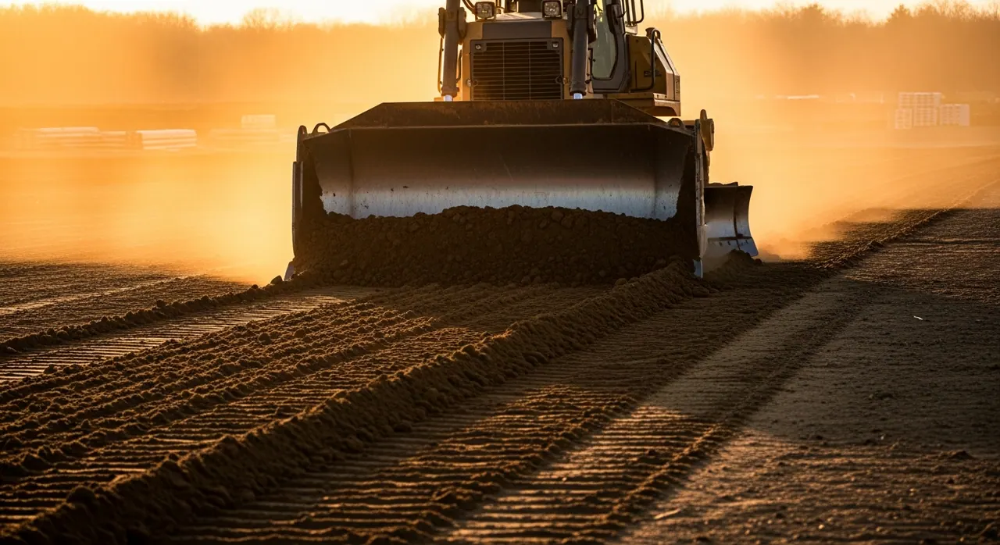
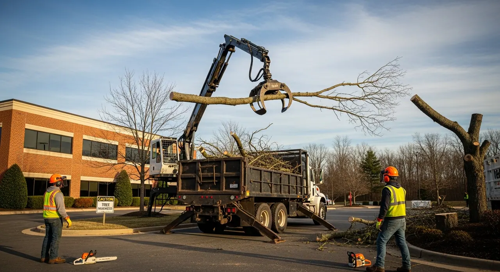
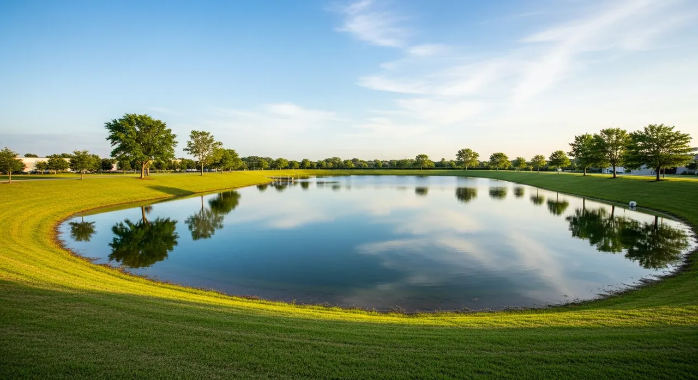
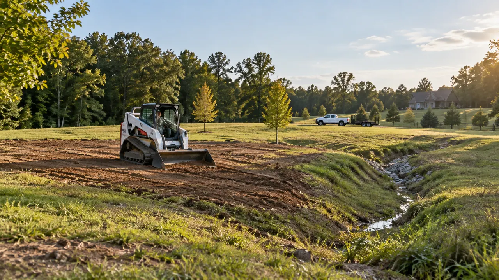

Everything Your Property Needs
Commercial landscaping, grounds care, clearing, grading, and property restoration across the Carolinas. Start with the work you need, and we'll help you plan what comes next.
One Property Plan, From Rough Ground to Ongoing Care
Clearing opens access. Grading shapes drainage. Both affect how well roads and turf hold up. We'll help you put the work in the right order, whether you need one job or ongoing care.

Commercial Landscaping
Regular mowing and seasonal care for large commercial grounds.

Commercial Snow & Ice
Seasonal plowing, anti-icing, and documented storm response for large commercial sites.

Industrial & Agricultural Land
Pasture, fence-line, and grounds care for farms and industrial sites.

Land Clearing & Mulching
Selective clearing and forestry mulching that opens up acreage responsibly.

Fine Grading & Site Prep
Shape the ground for construction, access, and drainage.
Drainage Solutions
French drains, swales, and pond work to manage water on your property.

Turf Installation & Seeding
Sod and seeding for commercial grounds, pastures, and other large sites.

Tree & Brush Management
Tree trimming, removal, selective clearing, and stump grinding.

Pond & Waterway Management
Design, excavation and long-term care of ponds and working waterways.

Property Reconstruction
Restore damaged ground with clearing, grading, drainage, and new turf.
Properties We Serve
We serve commercial, industrial, agricultural, municipal, and institutional properties 1 acre and larger. We do not provide residential services.
A Plan Before Work Starts
Before we start, you'll know what's included, how we'll access the site, and whether any specialist work is needed.
Across Two Regions
We serve Upstate South Carolina and greater Charlotte. Contact us to confirm coverage and available dates for your property.
Explore More With P1
Find Service Coverage
Find the services you need across Upstate SC and greater Charlotte.
Let's Walk Your Property
Tell us where it is and what's going on. The site visit and written estimate are free.